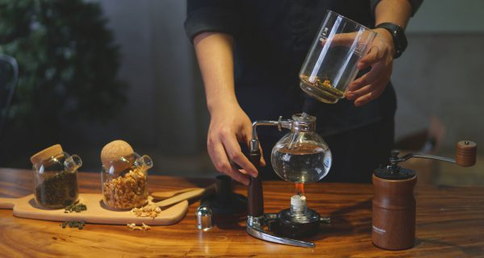

Nhân viên pha chế

Mô tả công việc:
- Nhận order và thực hiện pha chế đồ uống theo yêu cầu của khách hàng, đảm bảo nhanh chóng và chính xác.
- Pha chế đồ uống đúng công thức, định lượng, đảm bảo chất lượng về màu sắc, mùi vị và hình thức trang trí.
- Thành thạo kỹ năng trang trí, tạo hình nghệ thuật cho đồ uống, tạo ấn tượng và sự hấp dẫn cho sản phẩm.
- Theo dõi và kiểm soát thời gian pha chế, đảm bảo phục vụ đúng lúc và kịp thời cho khách.
- Kiểm tra lại chất lượng đồ uống lần cuối trước khi phục vụ khách, đảm bảo đạt tiêu chuẩn chất lượng.
- Giữ vệ sinh sạch sẽ khu vực quầy pha chế, đảm bảo môi trường làm việc gọn gàng, ngăn nắp.
Yêu cầu công việc:
- Đủ 18 tuổi trở lên, ưu tiên ứng viên tốt nghiệp THPT.
- Sức khỏe tốt, có khả năng đi lại và đứng làm việc trong thời gian dài.
- Thời gian làm việc linh hoạt, có thể xoay ca.
- Khả năng giữ bình tĩnh và xử lý tình huống chuyên nghiệp với khách hàng khó tính.
- Kỹ năng giao tiếp tốt, thân thiện với khách hàng.
- Có kinh nghiệm pha chế trong ngành dịch vụ ăn uống (F&B) là một lợi thế.